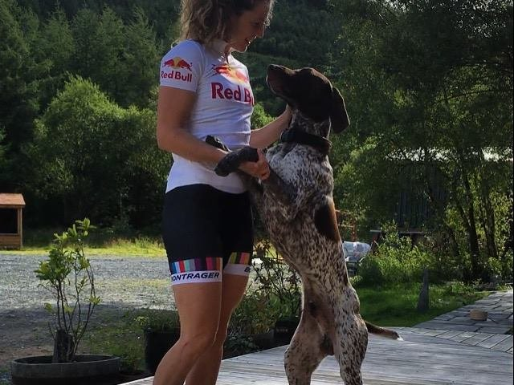

Pro Mountain Biker
Rachel Atherton
Rachel, the youngest Atherton at 23 years old has already achieved global status within the sport.
At only 20 years old, Rach became the first British woman to win the Elite Women UCI Downhill World Championship in June 2008 with an unprecendeted winning margin of 12 seconds. The same year she wrapped up the World Cup Series. Since then she has gone on to win numerous UCI Downhill World Cups and Medals at the World Champs, but injuries have prevented her from defending those titles...the game is now on!